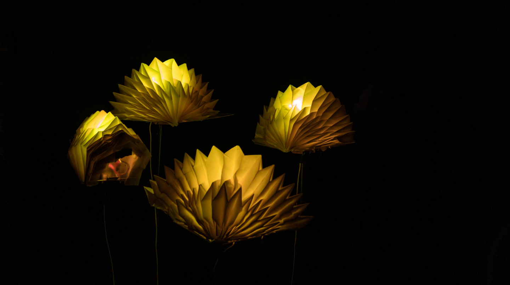
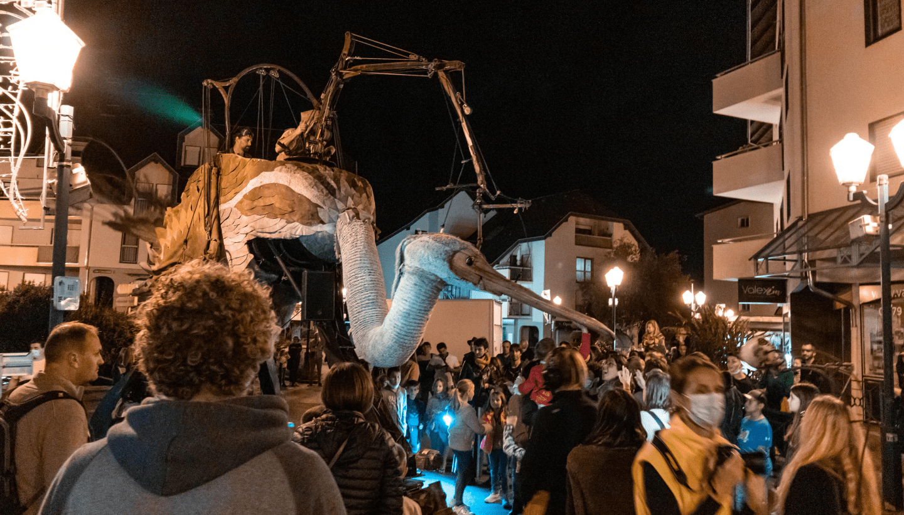

Notre démarche
Après une première réunion avec la représentante de la mairie de la Motte-Servolex, les
étudiant·e·s
concerné·e·s ont étudié l’événement sous toutes ses coutures et élaboré un planning. Chacun s’est
vu
attribuer un rôle et une position pour couvrir l’ensemble de la Nuit de la Création.
Le jour J, après avoir effectué les réglages nécessaires à une bonne captation de
nuit,
les membres de
Pikoom se sont répartis en duo pour immortaliser les 16 œuvres présentes ce soir-là.
Une fois l’événement terminé,c’est un travail de post-production qui a commencé. Dérushage,
étalonnage
et montage, tout a été mis en œuvre pour proposer des vidéos qui retranscrivent réellement l’ambiance de
l’événement.

Les problèmes rencontrés et les solutions apportées
Les problèmes
- Deux membres de l’équipe n’ont malheureusement pas pu être présents le jour J ce qui a entraîné un
manque d'effectifs.
- L'entièreté de l’événement n’a pas pu être capté dans son intégralité pendant toute la soirée dû au
nombre d’étudiant·e·s insuffisant.
- Première confrontation aux aléas du direct et à la captation de nuit qui devait s’effectuer sans la
lumière des lampadaires.
Les solutions
- Les groupes ont été adapté en trouvant des remplaçant·e·s
- Les étudiant·e·s ont fait preuve d’une grande adaptabilité pour réorganiser le planning le soir
même
- Les caméras et appareils photo ont été réglé en fonction de la lumière de l’éclairage de nuit
Bilan général
La Nuit de la Création a été notre tout premier projet. Nous
avons pu mettre en place une organisation rigoureuse que nous
avons pris soin de préserver pour les autres projets de
l’agence. Tout au long de cette production, nous avons gardé
une relation de confiance avec notre client qui a été très
réactif lors de nos échanges par mail.
